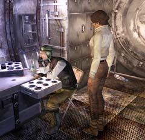
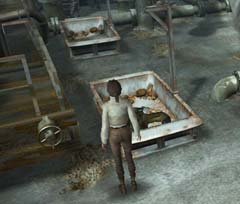
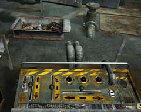
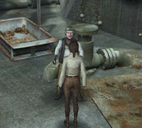
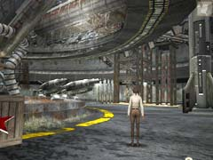

| 概要 | 地図 | |
| 淡いヒント集 | ヒント集 | 的確なヒント集 |
| 攻略最短ルート | Syberia 攻略へ |
|

犯人にエレナの居場所を教えると、彼はエレナのいるアラルバッドへ行く方法を知っているかもしれない人物のいる宇宙基地へ行くようにいう。 宇宙基地に着いたら、この大佐を捜して欲しい。大佐は久々に女性が来たことで喜び、祝杯を挙げようとしている。あなたはそんなことを無視して、部屋に落ちているウォッカを探して欲しい。 あなたがウォッカを見つけたと同時に、大佐は立ち上がり外へ出ていくだろう。 そうしたら、部屋の棚を調べ鍵と書類を手に入れて欲しい。この鍵は重要な装置を動かすために必要なのだ。

大佐はトレーの中で倒れている。彼は気絶しているのかそう簡単に目覚めてくれない。 まずは、画像に見えるバルブを回して欲しい。すると、どこからか水の流れる音がするはずだ。

次に、上にある装置を調べて欲しい。鍵穴に、先ほど拾った鍵を付けることで装置は動かすだろう。 そうしたら、上下左右のレバーをうまく操作して画像の位置へ大佐を動かして欲しい。そうしたら、真ん中にある上下レバーを動かし、放水しよう。強烈な水しぶきで大佐が目覚めてくれる。

正気に戻った大佐は、アラルバッドへ行く方法を教えてくれるだろう。早速、飛行船を探しに行こう。しかし、すぐに移動できるほど物事はうまくいくはずはないのだが・・・。

実際に飛行船を調べてみると、鳥が集まり飛行船は動かない。大佐にもう一度相談に行こう。 |
| 概要 | 地図 | |
| 淡いヒント集 | ヒント集 | 的確なヒント集 |
| 攻略最短ルート | Syberia 攻略へ |